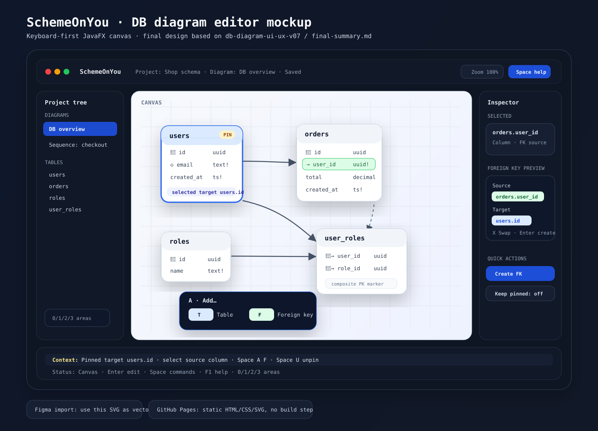

{kind=link}
Canvas остаётся главным визуальным пространством, но создание таблиц, колонок, FK и join table доступно без мыши.
SchemeOnYou · final DB diagram UI/UX
Keyboard-first canvas for building database schemas
Макет по финальному описанию design/final-summary.md: JavaFX desktop sketch editor, визуальный canvas как основное рабочее пространство, command palette, progressive Space command sheet и безопасное создание FK через явное preview.

Figma-ready: теперь есть два пути: figma-plugin/manifest.json создаёт редактируемые native Figma layers через Plugin API, а docs/assets/schemeonyou-db-ui-mockup.svg остаётся быстрым SVG-import fallback.
Ключевая UX-модель
Одна приоритетная context line показывает только самое важное: preview, validation, relation pin или selection hint.
FK, join table и destructive actions проходят через preview/confirmation и откатываются одной undo-командой.
Shortcut layout
Ctrl + Shift + PCommand palette
F6Next major area
Space A TAdd table
Space A CAdd column
Space A FAdd foreign key
Space A JAdd join table
Space PPin for relation
Space UUnpin
Space G TGo target
Space L DLayout diagram
Решения из final-summary
Связи показываются простыми directional FK lines; semantic meaning выводится из FK/PK/unique.
FK preview всегда показывает, где source column, где target column, плюс локальный X Swap.
Повторное создание FK — через явный checkbox, выключенный по умолчанию, без скрытого repeat mode.
Figma integration source
Native Figma plugin
В репозитории добавлен figma-plugin/. Он использует Figma Plugin API и создаёт макет как редактируемые слои: frames, text layers, table cards, FK lines, source/target chips, command sheet и footer context line.
Как запустить: Plugins → Development → Import plugin from manifest…, выбрать figma-plugin/manifest.json, затем запустить SchemeOnYou DB UI Mockup.
Для просмотра через Pages исходники продублированы в docs/figma-plugin/.
Публикация
Страница лежит в docs/index.html. Для GitHub Pages подготовлен workflow .github/workflows/pages.yml, который публикует содержимое docs/ при push в master.